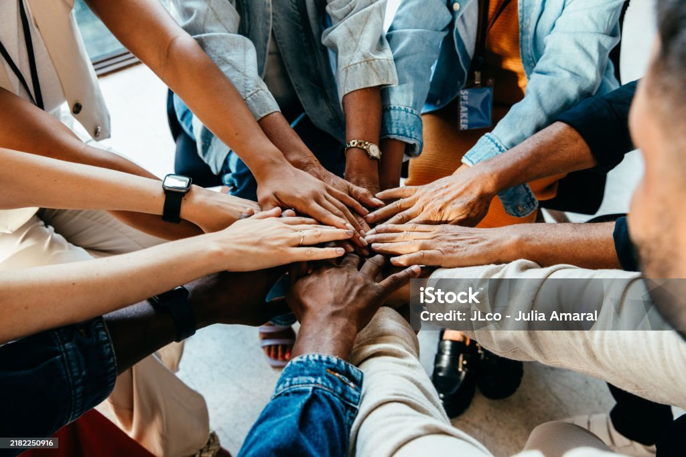

Mamadou Sarr
CEO & Co-fondateur
Nés en Afrique, construits pour le monde. Notre mission est de valoriser les talents du continent.

AfriTalent est née en 2022 d'un constat simple : l'Afrique regorge de talents numériques exceptionnels, mais ceux-ci peinent à accéder aux opportunités internationales faute d'une plateforme dédiée à leurs réalités.
Fondée à Dakar par trois entrepreneurs passionnés de technologie, la plateforme a démarré avec une cinquantaine de freelances inscrits. Deux ans plus tard, nous comptons plus de 2 500 profils vérifiés dans 18 pays, et des missions réalisées pour des clients sur 4 continents.
Notre ambition ? Faire de l'Afrique le prochain grand hub mondial du freelance technologique d'ici 2030.
Des personnes passionnées, unies par la même vision pour l'Afrique numérique.
CEO & Co-fondateur
CTO & Co-fondatrice
Directeur Produit
Directrice Marketing
Les principes qui guident chacune de nos décisions.
Nous cherchons constamment de nouvelles façons de simplifier la mise en relation et d'améliorer l'expérience de nos membres.
Chaque freelance africain, qu'il soit à Lagos, Bamako ou Antananarivo, mérite un accès équitable aux opportunités mondiales.
Nous construisons plus qu'une plateforme : un réseau solidaire où les talents africains s'entraident et grandissent ensemble.
Nous exigeons la qualité à chaque étape, du processus de vérification des profils à la résolution des litiges entre membres.